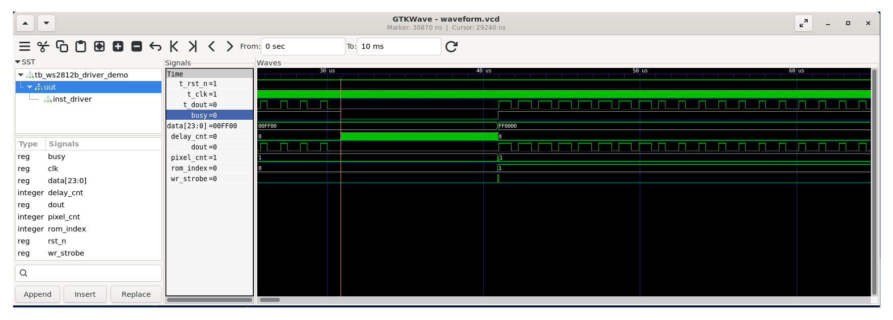
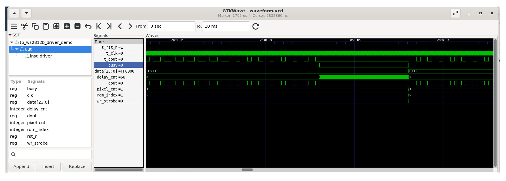

Tutorial: WS2812B / NeoPixel RGB LED Programming#
What is WS2812?#
RGB LEDs are optoelectronic devices that integrate three light-emitting diodes (LEDs) of Red, Green, and Blue (RGB) colors into a single package. Typical RGB LEDs have four pins:
- A common pin (either common cathode or common anode)
- Three pins for driving the RGB LEDs
Modern RGB LEDs often include built-in control circuitry, which can be programmed to display different RGB colors and brightness levels.
The WS2812, WS2812B (an improved version of the WS2812),
and SK6812 are popular examples of programmable RGB LED ICs,
typically available in an SMD5050 package.
They can be programmed using a single digital signal and
can be cascaded using the DIN and DOUT pins for input and output, respectively.
Figure: WS2812 vs. WS2812B Module
Figure: Single-Pixel WS2812B Modules
Figure: Multi-Pixel WS2812B Modules
Notes:
- WS2812 devices typically operate at 5V, but some variants can also work at 3.3V with reduced brightness.
- WS2812-based RGB LED modules are also known under the brand name NeoPixel by Adafruit Industries.
- When using a 5V WS2812B device and the
DINdata signal is at 3.3V logic level, a logic level shifter (from 3.3V to 5V) is required (e.g., SN74HCT245).
WS2812 Programming#
To set the color of an RGB LED in a WS2812 module,
3 bytes (or 24 bits) of data are required per RGB LED (or pixel).
A value of 0 represents the lowest brightness level, and
255 represents the highest brightness level for each color component.
The WS2812 module uses the DIN pin to receive data
from another device, such as a microcontroller.
Data is shifted in a bit-serial manner.
When multiple WS2812 LEDs are connected in a chain, data bits are fed into
the DIN pin of the first module and propagated through its DOUT pin
to the next module in a daisy-chained (cascading) configuration.
Each LED (or pixel) requires 24 bits to define its RGB color.
Therefore, for LEDs, a total of bits, or
bytes, must be sent.
The first 24 bits (or three bytes) shifted in will be used
by the first RGB LED in the chain and are removed;
the remaining data is shifted out through the DOUT pin to the next LED.
Data Transmission Protocol#
Questions - How does the WS2812 module determine whether each bit is a 0 or a 1? - How is the boundary of each bit defined?
WorldSemi, the company that manufactures the WS2812B chip, has defined a data transmission protocol. According to the WS2812 & WS2812B datasheets, each bit is encoded using pulse-width modulation (PWM) in the time domain, with durations measured in microseconds. The duration of the High and Low voltage levels within each bit determines whether it represents a 0 or a 1.

Figure: WS2812B Bit Timing
Pulse Timing Definitions#
- T1H: Duration of High signal for bit 1
- T1L: Duration of Low signal for bit 1
- T0H: Duration of High signal for bit 0
- T0L: Duration of Low signal for bit 0
- TH + TL: Total duration of one bit (bit time)
- Reset: A Low signal duration (>= 50 µs) used to signal the end of a transmission frame.
WS2812 Timing Parameters
| Bit Value | High Time (T_H) | Low Time (T_L) |
|---|---|---|
| 0 | 0.40 µs ± 150 ns | 0.85 µs ± 150 ns |
| 1 | 0.80 µs ± 150 ns | 0.45 µs ± 150 ns |
WS2812B Timing Parameters
| Bit Value | High Time (T_H) | Low Time (T_L) |
|---|---|---|
| 0 | 0.35 µs ± 150 ns | 0.90 µs ± 150 ns |
| 1 | 0.90 µs ± 150 ns | 0.35 µs ± 150 ns |
- Total Bit Time (T_H + T_L): 1.25 µs ± 600 ns
- Reset Signal: ≥ 50 µs of Low level
Based on a bit time of 1.25 µs, the effective data transmission frequency is approximately: 1 / 1.25 µs ≈ 800 kHz
Data Format and Bit Order
- Bit order within each byte is MSB first (Most Significant Bit first).
- The byte order sent to the WS2812B follows GRB format:
- First byte: Green (G)
- Second byte: Red (R)
- Third byte: Blue (B)
VHDL Coding: WS2812B Driver#
The ws2812b_driver module provided below is used to shift out 24-bit data to
a WS2812B module. When the control signal WR (Write Strobe)
is high, the 24-bit data on the DATA pins is written into
an internal register of the module. The BUSY signal changes
from 0 to 1, and the data is shifted out through the DOUT pin.
After all 24 bits are sent, the BUSY signal changes from 1 back to 0.
-- File: ws2812b_driver.vhd
LIBRARY IEEE;
USE IEEE.STD_LOGIC_1164.ALL;
USE IEEE.NUMERIC_STD.ALL;
ENTITY ws2812b_driver IS
GENERIC (
CLK_HZ : INTEGER := 50_000_000 -- Input clock frequency
);
PORT (
CLK : IN STD_LOGIC; -- Clock input
RST_N : IN STD_LOGIC; -- Async reset active low
WR : IN STD_LOGIC; -- Write strobe input
DATA : IN STD_LOGIC_VECTOR(23 DOWNTO 0); -- 24-bit GRB color data
BUSY : OUT STD_LOGIC; -- High when sending data
DOUT : OUT STD_LOGIC -- Serial data output to WS2812
);
END ws2812b_driver;
ARCHITECTURE behavioral OF ws2812b_driver IS
-- Timing constants
CONSTANT CLK_TICK_US : INTEGER := CLK_HZ / INTEGER(1e6);
CONSTANT T0H : INTEGER := (CLK_TICK_US * 400/1000); -- '0' bit high time
CONSTANT T0L : INTEGER := (CLK_TICK_US * 850/1000); -- '0' bit low time
CONSTANT T1H : INTEGER := (CLK_TICK_US * 800/1000); -- '1' bit high time
CONSTANT T1L : INTEGER := (CLK_TICK_US * 450/1000); -- '1' bit low time
-- FSM states
TYPE state_type IS (IDLE, LOAD, SEND_BIT_H, SEND_BIT_L);
SIGNAL state : state_type := IDLE;
-- Internal signals
SIGNAL data_reg : STD_LOGIC_VECTOR(23 DOWNTO 0) := (OTHERS => '0');
SIGNAL bit_index : INTEGER RANGE 0 TO 23 := 23;
SIGNAL clk_counter : INTEGER;
SIGNAL busy_reg : STD_LOGIC := '0';
SIGNAL dout_reg : STD_LOGIC := '0';
SIGNAL cnt_t_high : INTEGER := 0;
SIGNAL cnt_t_low : INTEGER := 0;
BEGIN
-- output signal assignments
BUSY <= busy_reg;
DOUT <= dout_reg;
PROCESS (CLK, RST_N)
BEGIN
IF RST_N = '0' THEN
state <= IDLE;
busy_reg <= '0';
dout_reg <= '0';
clk_counter <= 0;
bit_index <= 23;
data_reg <= (OTHERS => '0');
cnt_t_high <= 0;
cnt_t_low <= 0;
ELSIF rising_edge(CLK) THEN
CASE state IS
WHEN IDLE =>
busy_reg <= '0';
dout_reg <= '0';
clk_counter <= 0;
bit_index <= 23;
IF WR = '1' THEN
data_reg <= DATA;
busy_reg <= '1';
state <= LOAD;
END IF;
WHEN LOAD =>
IF data_reg(23) = '1' THEN -- MSB timing
cnt_t_high <= T1H;
cnt_t_low <= T1L;
ELSE
cnt_t_high <= T0H;
cnt_t_low <= T0L;
END IF;
clk_counter <= 0;
dout_reg <= '1';
state <= SEND_BIT_H;
WHEN SEND_BIT_H =>
clk_counter <= clk_counter + 1;
IF clk_counter = cnt_t_high THEN
dout_reg <= '0';
clk_counter <= 0;
state <= SEND_BIT_L;
END IF;
WHEN SEND_BIT_L =>
clk_counter <= clk_counter + 1;
IF clk_counter = cnt_t_low THEN
IF bit_index = 0 THEN -- LSB sent
dout_reg <= '0';
clk_counter <= 0;
busy_reg <= '0';
state <= IDLE;
ELSE
-- Shift data left by 1 (MSB first)
data_reg <= data_reg(22 DOWNTO 0) & '0';
bit_index <= bit_index - 1;
-- Setup timings for next bit
IF data_reg(22) = '1' THEN
cnt_t_high <= T1H;
cnt_t_low <= T1L;
ELSE
cnt_t_high <= T0H;
cnt_t_low <= T0L;
END IF;
clk_counter <= 0;
dout_reg <= '1';
state <= SEND_BIT_H;
END IF;
END IF;
WHEN OTHERS =>
state <= IDLE;
END CASE;
END IF;
END PROCESS;
END behavioral;
The following module (ws2812b_driver_demo) shows how to instantiate the
the ws2812b_driver driver and can be used to drive a single-pixel WS2812B module.
There are a set of predefined color bits (24 bits for each color)
which will be applied to the WS2812B in sequence.
LIBRARY IEEE;
USE IEEE.STD_LOGIC_1164.ALL;
USE IEEE.NUMERIC_STD.ALL;
ENTITY ws2812b_driver_demo IS
PORT (
CLK : IN STD_LOGIC; -- 50MHZ clock
RST_N : IN STD_LOGIC;
DOUT : OUT STD_LOGIC
);
END ws2812b_driver_demo;
ARCHITECTURE rtl OF ws2812b_driver_demo IS
COMPONENT ws2812b_driver
GENERIC (
CLK_HZ : INTEGER := 50_000_000
);
PORT (
CLK : IN STD_LOGIC;
RST_N : IN STD_LOGIC;
WR : IN STD_LOGIC;
DATA : IN STD_LOGIC_VECTOR(23 DOWNTO 0);
BUSY : OUT STD_LOGIC;
DOUT : OUT STD_LOGIC
);
END COMPONENT;
--------------------------------------------------------------------
-- Color ROM (8 test colors: GRB format)
--------------------------------------------------------------------
TYPE rom_type IS ARRAY (0 TO 7) OF STD_LOGIC_VECTOR(23 DOWNTO 0);
CONSTANT color_rom : rom_type := (
x"00FF00",
x"FF0000",
x"0000FF",
x"FFFF00",
x"00FFFF",
x"FF00FF",
x"FFFFFF",
x"000000"
);
-- FSM states
TYPE state_type IS (IDLE, WRITE_DATA, WAIT_BUSY);
SIGNAL state : state_type := IDLE;
SIGNAL rom_index : INTEGER RANGE 0 TO 7 := 0;
SIGNAL wr_strobe : STD_LOGIC := '0';
SIGNAL busy : STD_LOGIC;
SIGNAL delay_cnt : INTEGER := 0;
SIGNAL data : STD_LOGIC_VECTOR(23 DOWNTO 0);
CONSTANT CLK_HZ : INTEGER := 50e6;
CONSTANT DELAY_MAX : INTEGER := CLK_HZ/2; -- use a smaller value for simulation
BEGIN
data <= color_rom(rom_index);
--------------------------------------------------------------------
-- DUT: WS2812B Driver Instance
--------------------------------------------------------------------
inst_driver : ws2812b_driver
GENERIC MAP(
CLK_HZ => CLK_HZ
)
PORT MAP(
CLK => CLK,
RST_N => RST_N,
WR => wr_strobe,
DATA => data,
BUSY => busy,
DOUT => DOUT
);
--------------------------------------------------------------------
-- FSM Controller to loop through color_rom
--------------------------------------------------------------------
PROCESS (CLK, RST_N)
BEGIN
IF RST_N = '0' THEN
wr_strobe <= '0';
rom_index <= 0;
state <= IDLE;
delay_cnt <= 0;
ELSIF rising_edge(CLK) THEN
CASE state IS
WHEN IDLE => -- Idle: wait until not busy
IF busy = '0' THEN
wr_strobe <= '1';
state <= WRITE_DATA;
END IF;
WHEN WRITE_DATA => -- Issue write strobe
IF busy = '1' THEN
wr_strobe <= '0';
state <= WAIT_BUSY;
END IF;
WHEN WAIT_BUSY => -- Wait for delay before next color
IF busy = '0' THEN
IF delay_cnt < DELAY_MAX THEN
delay_cnt <= delay_cnt + 1;
ELSE
delay_cnt <= 0;
rom_index <= (rom_index + 1) MOD 8;
state <= IDLE;
END IF;
END IF;
WHEN OTHERS =>
state <= IDLE;
END CASE;
END IF;
END PROCESS;
END rtl;
VHDL Simulation#
The following VHDL testbench (ts_ws2812b_driver_demo) is provided for simulation.
-- File: ts_ws2812b_driver_demo.vhd
library IEEE;
use IEEE.STD_LOGIC_1164.ALL;
use IEEE.NUMERIC_STD.ALL;
entity tb_ws2812b_driver_demo is
end tb_ws2812b_driver_demo;
architecture sim of tb_ws2812b_driver_demo is
-- Clock period definition
constant CLK_PERIOD : time := 20 ns; -- 50 MHz
-- DUT signals
signal t_CLK : std_logic := '0';
signal t_RST_N : std_logic := '0';
signal t_DOUT : std_logic;
-- DUT instance
component ws2812b_driver_demo
port (
CLK : in std_logic;
RST_N : in std_logic;
DOUT : out std_logic
);
end component;
begin
-- Instantiate the DUT
uut: ws2812b_driver_demo
port map (
CLK => t_CLK,
RST_N => t_RST_N,
DOUT => t_DOUT );
-- Clock generation
clk_process : process
begin
while true loop
t_CLK <= '0';
wait for CLK_PERIOD / 2;
t_CLK <= '1';
wait for CLK_PERIOD / 2;
end loop;
end process;
-- Reset and simulation control
stim_proc : process
begin
-- Apply reset
t_RST_N <= '0';
wait for 100 ns;
t_RST_N <= '1';
wait;
end process;
end sim;
-- ghdl -a ws2812b_driver.vhd ws2812b_driver_demo.vhd tb_ws2812b_driver_demo.vhd
-- ghdl -e tb_ws2812b_driver_demo
-- ghdl -r tb_ws2812b_driver_demo --vcd=waveform.vcd --stop-time=10ms


Figure: Simulation waveforms
Output Signal Measurement#
The VHDL source code has been compiled, and the resulting bitstream was loaded onto the MAX10-Lite FPGA board. The waveform of the output signal, measured by a digital oscilloscope, is shown below.
Figure: MAX10-Lite FPGA board + WS2812 module
Figure: Waveforms of the output signal
Figure: Waveforms of the output signal (bit value = 0)
Figure: Waveforms of the output signal (bit value = 1)
This work is licensed under a Creative Commons Attribution-ShareAlike 4.0 International License.
Created: 2025-07-02 | Last Updated: 2025-07-02